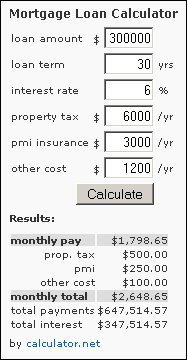

Mortgage Loan Calculator Plugin for WordPress
Description
This is a standard mortgage loan calculator to calculate the monthly mortgage payments, total payments, and interest based on the loan amount, interest rate, loan term, etc. This calculator can be inserted either to the sidebar or into the post, but not both.
Compatible: WordPress 2.5 or above
License: GNU GPL license
Download (Version: 1.2)
Screenshot

Installation
- Unzip "mortgage-calculator-wp-widget-1.2.zip" and upload the contained files to the "/wp-content/plugins/" directory
- Activate the plugin through the "Plugins" menu in WordPress
Add this calculator to sidebar
Install "Mortgage Loan Calculator" through the WordPress admin menu of Appearance or Design and then widgets.
Add this calculator to a post or a page
Place [calculatornet_mortgage_calculator] in the content to insert into a post.
Faq
Can I change the look and feel of the calculator?
Yes, you can edit the code after "Edit the following to change the look and feel of this calculator" in mortgage-calculator-wp-widget.php to change the look and feel. You need to have basic HTML understanding to change it correctly.
Can I put this calculator to both the sidebar and the post?
No, please put it to either the sidebar or the post, but not both. If put into both places, the calculator will generate javascript error.